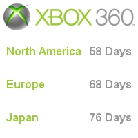
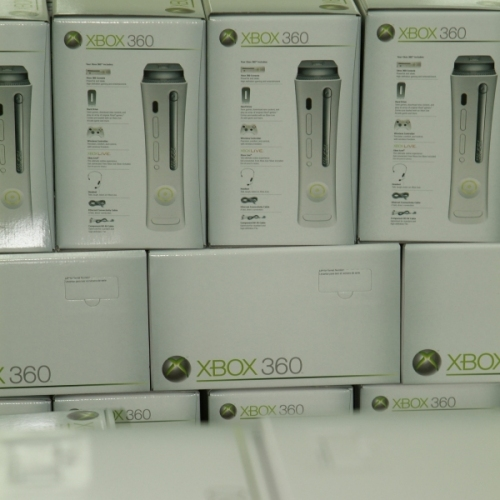
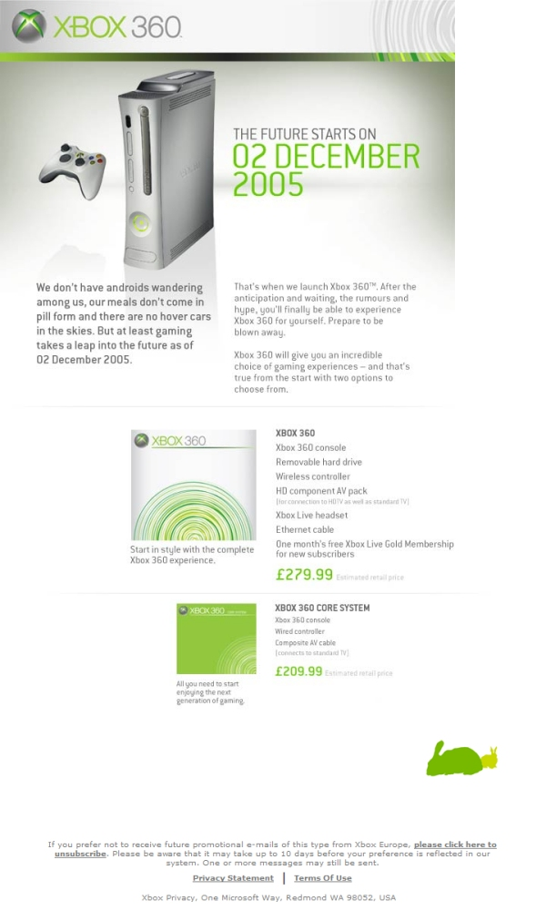

CESPage.com Xbox Weekly Update Five
Countdown to Xbox 360, Origen Xbox 360 mystery soon to be revealed and more
By CESPage.com Xbox, Published 25th September 2005
Xbox 360 Launch Countdown
Xbox 360 is only a couple of months away. CESPage.com Xbox will be counting down to the release right here for North America, Europe and Japan.
With the release of the new console in North America on 22nd November, in Europe on 2nd December and Japan on the 10th December.
Each week CESPage.com Xbox will focus on a title for the new console with some speculation about new features and announcements about the development
and release of that particular title.
Plus any screenshots and information about titles that have not yet been included in the games section.
The Xbox 360 is already rolling off the production line - you can seem some boxed Xbox 360s that are ready to roll below.

Origen Xbox 360 Week 6
With just a couple of days to go, the website may not have changed this time but with the timer nearly running we will find out what this website is about.
Is the counter just counting down to a new layout for Xbox.com? It is not about the release of Halo 3, nor is it about the release date
for the Xbox 360 console as this is already known.
Another theory is that this could be the announcement of the launch titles that will be released at the same time as the Xbox 360.
It may also be counting down to some kind of European event for the Xbox 360. When the countdown is over you will find out what it
was all about right here on CESPage.com Xbox.
In an email from Xbox Europe entitled "The facts, the figures, the future." Also seems to contain a graphic of rabbits linking to this website,
you can see this below.

You can see a larger picture of the website as of the time of writing below:
View : www.origenxbox360.com
Origen Xbox 360 Week 6
Just over a week to go on this mysterious website yet another update has occurred two more apples have appeared on the tree, and the rabbits appear on
either side of the bonsai tree.
What is the website counting down too, it could be to the updating of the Xbox.com website to a brand new layout, an update to the forums there is
anticipated and the date this is due to occur has not been announced so this may be what it is for.
View : www.origenxbox360.com

Xbox 360 Hardware
With the Xbox 360 also comes the hardware, from the wired and wireless controller to the cables and remote controls. All the main first party hardware information and actual product images can be found on CESPage.com Xbox, except the Xbox Live Camera as this is not due for release until Spring 2006, as more details and images become available these will be added to the relevant sections.